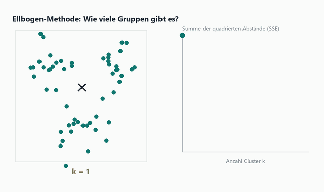
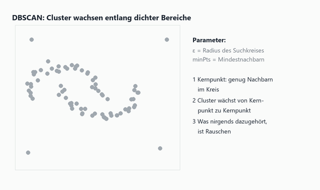
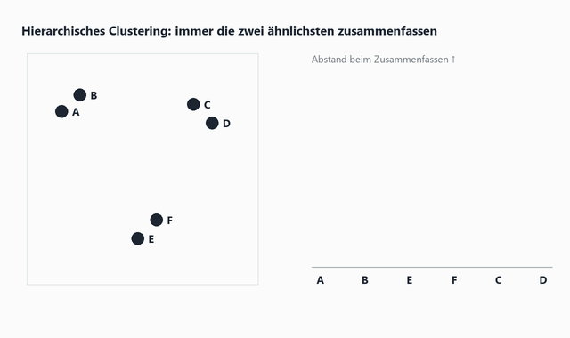
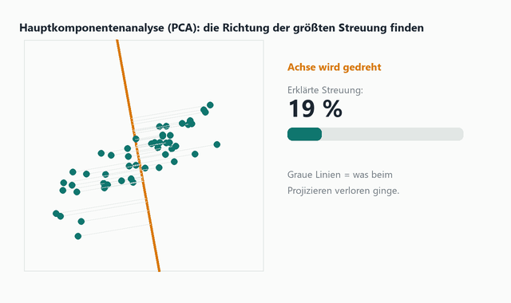
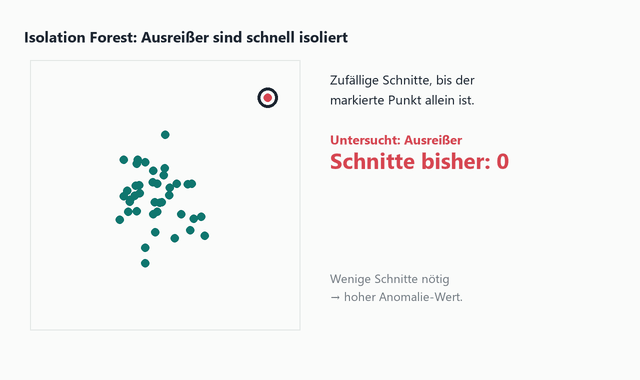
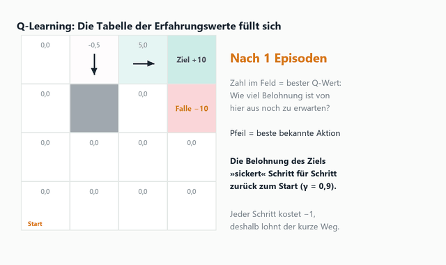

Lernen ohne Lösungsheft: Muster finden und durch Belohnung lernen
Nicht immer gibt es Labels. Oft hat man nur Daten und will wissen, welche Gruppen darin stecken, was ungewöhnlich ist oder wie man viele Merkmale vereinfacht. Und manchmal soll ein System selbst handeln und durch Ausprobieren lernen. In diesem Modul vertiefen Sie Clustering, Dimensionsreduktion, Anomalieerkennung und Warenkorbanalyse – und lernen, wie bestärkendes Lernen rechnet.
Clustering: Gruppen finden
Ähnliches zusammenfassen, ohne dass jemand vorher sagt, welche Gruppen es gibt.
Unüberwachtes Lernen im Überblick
Eine Bibliothekarin bekommt 5.000 ungeordnete Bücher ohne Schlagwörter. Sie stapelt ähnliche zusammen: Kochbücher, Krimis, Reiseführer. Niemand hat ihr die Kategorien vorgegeben – sie ergeben sich aus den Büchern selbst. Ob „Krimis aus Skandinavien“ ein eigener Stapel wird, ist ihre Entscheidung.
| Aufgabe | Frage | Verfahren | Praxisbeispiel |
|---|---|---|---|
| Clustering | Welche Gruppen gibt es? | k-Means, DBSCAN, hierarchisch | Kundensegmente, Produktgruppen |
| Dimensionsreduktion | Geht es mit weniger Merkmalen? | PCA, t-SNE, UMAP | 50 Sensorwerte auf 5 verdichten |
| Anomalieerkennung | Was ist ungewöhnlich? | Isolation Forest, z-Wert, Autoencoder | Betrug, Maschinenstörung |
| Assoziationsanalyse | Was kommt oft zusammen vor? | Apriori | Warenkorb: Chips und Bier |
Es gibt keine „richtige Lösung“, mit der man vergleichen könnte. Ob drei oder fünf Kundengruppen „stimmen“, entscheidet am Ende der fachliche Nutzen. Deshalb sind Interpretation und Rücksprache mit der Fachabteilung hier noch wichtiger als beim überwachten Lernen.
Weitere Beispiele: Die vier Aufgaben mit konkreten Zahlen
| Frage aus der Praxis | Aufgabe | Mögliches Ergebnis |
|---|---|---|
| „Welche Typen von Kunden haben wir eigentlich?“ | Clustering | Drei Segmente: Stammkunden, Gelegenheitskäufer, Schläfer |
| „Wir messen 50 Werte an jeder Maschine – können wir das einfacher darstellen?“ | Dimensionsreduktion | 5 Kennzahlen erklären 92 % der Schwankung |
| „Welche Buchungen sehen merkwürdig aus?“ | Anomalieerkennung | 120 von 80.000 Buchungen markiert |
| „Welche Produkte werden zusammen gekauft?“ | Assoziationsanalyse | Regel: Grillkohle → Anzünder (Lift 4,2) |
Ein Clustering teilt 14.400 Kunden in drei Gruppen. Ein anderes Verfahren oder eine andere Einstellung ergibt vier Gruppen. Welches ist richtig? Keines von beiden im absoluten Sinn. Prüfstein ist der Nutzen: Kann das Marketing mit den Gruppen unterschiedliche Maßnahmen planen? Sind die Gruppen stabil, wenn man andere Daten nimmt? Beim überwachten Lernen misst man den Fehler gegen das Label – hier fehlt dieser Maßstab. Deshalb gehört das Gespräch mit der Fachabteilung zum Verfahren.
Beim Clustern von Maschinendaten steht eine Temperatur teils in °C, teils in °F (212 statt 100). Das Verfahren behandelt 212 als völlig anderen Zustand und bildet einen eigenen Cluster „heiße Maschinen“ – in Wahrheit ein Einheitenfehler. Unüberwachtes Lernen findet jedes Muster, auch Muster, die nur Datenfehler sind. Deshalb gilt wie überall: erst Daten prüfen, dann lernen lassen.
Frage (6 Punkte): Ordnen Sie zu: (a) Kundengruppen finden, (b) 40 Sensorwerte auf wenige Kennzahlen verdichten, (c) ungewöhnliche Zahlungen entdecken. Nennen Sie jeweils ein Verfahren.
Musterlösung: (a) Clustering, z. B. k-Means oder DBSCAN (2 Punkte). (b) Dimensionsreduktion, z. B. PCA (2 Punkte). (c) Anomalieerkennung, z. B. Isolation Forest oder z-Wert-Regel (2 Punkte).
Unüberwacht = ohne Labels. Vier Aufgaben: Gruppen finden, vereinfachen, Auffälliges entdecken, Zusammenhänge im Warenkorb aufdecken.
k-Means im Detail
Eine Stadt will drei Feuerwachen bauen. Man setzt sie zuerst irgendwo hin, ordnet jedes Haus der nächsten Wache zu und verschiebt dann jede Wache in die Mitte „ihrer“ Häuser. Das wiederholt man, bis sich nichts mehr ändert. Genau so arbeitet k-Means.
- k wählen und k Startzentren festlegen (zufällig oder mit k-Means++, das gut verteilte Starts wählt).
- Zuordnen: Jeder Punkt kommt zum nächsten Zentrum (euklidischer Abstand).
- Verschieben: Jedes Zentrum wandert zum Mittelwert seiner Punkte.
- Wiederholen, bis sich die Zuordnung nicht mehr ändert.
Rechenweg in 2D: A (1|1), B (2|1), C (4|3), D (5|4), k = 2, Start bei A und B
- Zuordnung Runde 1: A → Z1 (Abstand 0). B → Z2 (0). C: zu Z1 √(9 + 4) ≈ 3,61, zu Z2 √(4 + 4) ≈ 2,83 → Z2. D: 5,00 gegen 4,24 → Z2.
- Neue Zentren: Z1 = (1|1) · Z2 = ((2+4+5)/3 | (1+3+4)/3) ≈ (3,67|2,67)
- Runde 2: B ist jetzt näher an Z1 (Abstand 1 gegen 2,36) → wechselt. C und D bleiben bei Z2.
- Neue Zentren: Z1 = (1,5|1) · Z2 = (4,5|3,5)
- Runde 3: keine Änderung → fertig: {A, B} und {C, D}
Die Summe der quadrierten Abstände aller Punkte zu ihrem Zentrum (SSE, auch Inertia). Jede Runde verkleinert sie oder lässt sie gleich. k-Means findet aber nur ein lokales Optimum – deshalb mehrfach mit verschiedenen Starts rechnen.
- k muss vorher festgelegt werden
- findet nur runde, ähnlich große Gruppen
- empfindlich gegen Ausreißer und Skalierung
- nur für Zahlen (für Kategorien: k-Modes)
k-Means mit weiteren Beispielen
Punkte: 1, 2, 3, 9, 10, 11. Startzentren: 2 und 3.
- Runde 1, Zuordnen: 1 → Z1 (Abstand 1 gegen 2), 2 → Z1 (0), 3 → Z2 (0), 9, 10, 11 → Z2.
- Verschieben: Z1 = (1 + 2) : 2 = 1,5 · Z2 = (3 + 9 + 10 + 11) : 4 = 8,25
- Runde 2: Der Punkt 3 ist nun näher an Z1 (1,5 gegen 5,25) und wechselt. Neue Zentren: Z1 = (1 + 2 + 3) : 3 = 2 · Z2 = (9 + 10 + 11) : 3 = 10
- Runde 3: keine Änderung. Ergebnis: {1, 2, 3} und {9, 10, 11}, Summe der quadrierten Abstände: (1 + 0 + 1) + (1 + 0 + 1) = 4
Andere Startzentren (z. B. 9 und 10) führen hier zum selben Endergebnis. In komplexen Daten ist das nicht garantiert, deshalb rechnet man mehrfach mit verschiedenen Starts.
Drei Kunden: A (30 Jahre, 5.000 € Umsatz), B (60 Jahre, 5.100 €), C (31 Jahre, 9.000 €).
- Ohne Skalierung: Abstand A–B: √(30² + 100²) ≈ 104; Abstand A–C: √(1² + 4.000²) ≈ 4.000. k-Means hält A und B für sehr ähnlich (nur der Umsatz zählt), obwohl sie 30 Jahre auseinanderliegen.
- Mit Skalierung (Standardabweichung Alter 15 Jahre, Umsatz 2.000 €): A–B: √(2² + 0,05²) ≈ 2,00; A–C: √(0,07² + 2²) ≈ 2,00. Beide Merkmale zählen jetzt gleich viel.
Daten bestehen aus zwei Halbmonden, die ineinandergreifen. k-Means teilt sie mit einer geraden Trennlinie in zwei Hälften, die beide Monde zerschneiden – denn es sucht runde Gruppen um Zentren. Ein Verfahren wie DBSCAN (Lektion 4) erkennt dagegen die Monde. Merke: k-Means passt, wenn die Gruppen ungefähr kugelförmig und ähnlich groß sind.
Frage (5 Punkte): Punkte 1, 2, 8, 9; Startzentren 1 und 8. Führen Sie k-Means durch und geben Sie die Endzentren an.
Musterlösung: Zuordnung: 1, 2 → Zentrum 1; 8, 9 → Zentrum 8 (2 Punkte). Neue Zentren: (1 + 2) : 2 = 1,5 und (8 + 9) : 2 = 8,5 (2 Punkte). Keine weitere Änderung der Zuordnung: fertig (1 Punkt).
k-Means: zuordnen, Zentren verschieben, wiederholen. Vorher skalieren, mehrere Starts, k gut wählen.
Wie viele Cluster? Ellbogen und Silhouette
Wie viele Schubladen braucht ein Schreibtisch? Mit einer Schublade herrscht Chaos, mit 40 sucht man ewig. Irgendwo dazwischen gibt es einen Punkt, ab dem zusätzliche Schubladen kaum noch Ordnung bringen.

Rechenweg: a = 2, b = 8
- s = (8 − 2) : max(2, 8) = 6 : 8 = 0,75 → gut zugeordnet
Für das ganze Clustering mittelt man die Silhouette aller Punkte und wählt das k mit dem höchsten Durchschnitt.
Zahlen sind nur die halbe Antwort. Drei Kundengruppen, für die das Marketing drei verschiedene Kampagnen machen kann, sind wertvoller als sieben mathematisch etwas bessere Gruppen, mit denen niemand etwas anfangen kann.
Weitere Beispiele: Ellbogen und Silhouette gerechnet
Für die Punkte 1, 2, 3, 9, 10, 11 ergibt die beste Einteilung jeweils folgende Summe der quadrierten Abstände (SSE):
| k | Einteilung | SSE |
|---|---|---|
| 1 | alle in einem Cluster (Mittel 6) | 100 |
| 2 | {1, 2, 3}, {9, 10, 11} | 4 |
| 3 | {1, 2, 3}, {9}, {10, 11} | 2,5 |
| 4 | {1, 2}, {3}, {9}, {10, 11} | 1 |
| 6 | jeder Punkt allein | 0 |
Von k = 1 zu k = 2 fällt die SSE von 100 auf 4 – ein riesiger Sprung. Danach bringt jedes weitere Cluster nur noch kleine Verbesserungen. Der Ellbogen liegt bei k = 2. (k = 6 hat SSE 0, ist aber sinnlos: Jeder Punkt ist sein eigenes Cluster.)
Für die Einteilung {1, 2, 3} und {9, 10, 11}:
- Punkt 3: mittlerer Abstand zum eigenen Cluster a = (2 + 1) : 2 = 1,5; zum anderen Cluster b = (6 + 7 + 8) : 3 = 7. s = (7 − 1,5) : 7 ≈ 0,79 – sehr gut zugeordnet.
- Punkt 2: a = 1 · b = (7 + 8 + 9) : 3 = 8 · s = 7 : 8 = 0,875.
- Ein Grenzfall: Liegt ein Punkt mit a = 5 und b = 5 mitten zwischen zwei Clustern, ist s = 0. Bei a = 6 und b = 4 ist s = (4 − 6) : 6 ≈ −0,33: Er liegt dem fremden Cluster näher und ist vermutlich falsch zugeordnet.
Die Silhouette ist bei k = 2 am höchsten (0,71), bei k = 4 etwas niedriger (0,68). Für das Marketing wären vier Segmente aber hilfreicher, weil sich daraus vier unterschiedliche Maßnahmen ableiten lassen. Die Entscheidung für k = 4 ist dann fachlich begründet und gehört dokumentiert („Silhouette nur geringfügig niedriger, Nutzen höher“).
Frage (5 Punkte): Ein Punkt hat a = 3 und b = 6. Berechnen Sie die Silhouette und deuten Sie sie. Wie bestimmt man mit der Ellbogen-Methode die Clusterzahl?
Musterlösung: s = (6 − 3) : 6 = 0,5: Der Punkt ist ordentlich zugeordnet (2 Punkte). Ellbogen: Für verschiedene k die SSE berechnen und auftragen; k am Knick wählen, ab dem zusätzliche Cluster die SSE kaum noch senken (3 Punkte).
Ellbogen: k am Knick der SSE-Kurve. Silhouette: höchster Durchschnitt (−1 bis +1). Am Ende entscheidet der fachliche Nutzen.
DBSCAN: Cluster nach Dichte
Von einem Flugzeug aus sieht man nachts Städte als helle, dichte Flecken, verbunden durch Lichterketten entlang der Straßen. Einzelne Lichter auf dem Land gehören zu keiner Stadt. DBSCAN findet genau solche dichten Bereiche – egal, welche Form sie haben – und markiert einzelne Punkte als Rauschen.

| Begriff | Bedeutung |
|---|---|
| ε (Epsilon) | Radius, in dem Nachbarn gesucht werden |
| minPts | Mindestanzahl Punkte im Radius, damit ein Punkt als dicht gilt |
| Kernpunkt | hat mindestens minPts Nachbarn im Radius |
| Randpunkt | liegt im Radius eines Kernpunkts, hat selbst aber zu wenige Nachbarn |
| Rauschen | weder Kern- noch Randpunkt → Ausreißer |
| k-Means | DBSCAN | |
|---|---|---|
| Anzahl Cluster | muss vorgegeben werden | ergibt sich von selbst |
| Form | rund, ähnlich groß | beliebig |
| Ausreißer | werden einem Cluster zugeschlagen | werden als Rauschen erkannt |
| Schwäche | falsches k, Ausreißer | Cluster sehr unterschiedlicher Dichte; ε schwer zu wählen |
DBSCAN an einer Zahlenreihe nachvollziehen
Werte: 1, 2, 3, 4, 10, 20, 21, 22, 23, 50. Parameter: ε = 1,5 und minPts = 3 (der Punkt selbst zählt mit).
| Punkt | Nachbarn im Radius 1,5 | Anzahl | Art |
|---|---|---|---|
| 1 | 1, 2 | 2 | Randpunkt (liegt bei Kernpunkt 2) |
| 2 | 1, 2, 3 | 3 | Kernpunkt |
| 3 | 2, 3, 4 | 3 | Kernpunkt |
| 4 | 3, 4 | 2 | Randpunkt |
| 10 | 10 | 1 | Rauschen |
| 20 | 20, 21 | 2 | Randpunkt |
| 21 | 20, 21, 22 | 3 | Kernpunkt |
| 22 | 21, 22, 23 | 3 | Kernpunkt |
| 23 | 22, 23 | 2 | Randpunkt |
| 50 | 50 | 1 | Rauschen |
Ergebnis: Cluster {1, 2, 3, 4} und Cluster {20, 21, 22, 23}; Rauschen: 10 und 50. Die Zahl der Cluster ergibt sich von selbst, und die beiden Einzelgänger werden nicht zwangsweise einer Gruppe zugeschlagen.
Ein Lieferdienst clustert die GPS-Koordinaten seiner Lieferungen. ε = 300 Meter, minPts = 20. Dichte Bereiche (Innenstadt, ein Neubaugebiet) werden Cluster, einzelne weit entfernte Adressen sind Rauschen. Aus den Clustern entstehen Stützpunkte für Fahrer. Mit k-Means wäre die Zahl der Cluster vorab zu raten gewesen, und weit abgelegene Adressen hätten die Zentren verzogen.
Als Faustregel wählt man minPts etwa doppelt so groß wie die Zahl der Merkmale (bei 2 Merkmalen mindestens 4). Für ε zeichnet man den Abstand jedes Punktes zu seinem minPts-ten Nachbarn der Größe nach auf; am „Knick“ der Kurve liegt ein guter Wert. Wie beim Ellbogen gilt: Ausprobieren und mit Fachleuten prüfen.
Frage (5 Punkte): Nennen Sie zwei Vorteile von DBSCAN gegenüber k-Means und einen Nachteil.
Musterlösung: Vorteile: Die Clusterzahl muss nicht vorgegeben werden; beliebig geformte Cluster werden gefunden; Ausreißer werden als Rauschen erkannt (je 1,5 Punkte für zwei Vorteile). Nachteil: schwierige Wahl von ε; Probleme bei Clustern sehr unterschiedlicher Dichte (2 Punkte).
DBSCAN: Cluster sind dichte Bereiche; Parameter ε und minPts; findet beliebige Formen und erkennt Rauschen; k muss nicht vorgegeben werden.
Hierarchisches Clustering und das Dendrogramm
Ein Stammbaum: Geschwister sind sich am ähnlichsten, dann kommen Cousins, dann entferntere Verwandte. Hierarchisches Clustering baut so einen Stammbaum für Daten – und man entscheidet erst am Ende, auf welcher Ebene man ihn „durchschneidet“.

Ablauf (agglomerativ, „von unten nach oben“)
- Jeder Punkt ist sein eigenes Cluster.
- Die zwei ähnlichsten Cluster zusammenfassen.
- Wiederholen, bis nur noch ein Cluster übrig ist.
- Im Dendrogramm auf der gewünschten Höhe schneiden.
Wie misst man den Abstand zwischen Gruppen? (Linkage)
- Single: die nächsten zwei Punkte – erzeugt lange Ketten
- Complete: die entferntesten zwei Punkte – kompakte Gruppen
- Average: Durchschnitt aller Paare – Mittelweg
- Ward: die Zusammenfassung, die die Streuung am wenigsten erhöht – ähnlich k-Means, oft Standard
k muss nicht vorher festgelegt werden; das Dendrogramm ist anschaulich und zeigt Untergruppen.
Rechenaufwand wächst stark mit der Datenmenge (für sehr große Datensätze ungeeignet); eine einmal getroffene Zusammenfassung wird nie rückgängig gemacht.
Ein Dendrogramm von Hand aufbauen
Punkte: A = 1, B = 2, C = 6, D = 8, E = 20.
- Kleinster Abstand: A–B = 1 → {A, B} bei Höhe 1.
- Nächster: C–D = 2 → {C, D} bei Höhe 2.
- Abstand der Gruppen {A, B} und {C, D} bei Single Linkage = kleinster Abstand zwischen ihren Punkten = B–C = 4 → {A, B, C, D} bei Höhe 4.
- E liegt 12 von D entfernt → alle bei Höhe 12.
Schnitt bei Höhe 3: {A, B}, {C, D}, {E} → drei Cluster. Schnitt bei Höhe 6: {A, B, C, D}, {E} → zwei Cluster. Je höher man schneidet, desto weniger Cluster.
Der Abstand der Gruppen {A, B} und {C, D} beträgt bei Single Linkage 4 (nächste Punkte B und C), bei Complete Linkage 7 (entfernteste Punkte A und D: 8 − 1). Mit Complete Linkage werden Gruppen erst später verschmolzen, und die Gruppen werden kompakter. Single Linkage neigt zu langgezogenen Ketten, in denen Punkte über Zwischenstationen aneinandergereiht werden.
Ein Händler gliedert sein Sortiment: Die ähnlichsten Produkte bilden Untergruppen (Rotwein Spanien / Rotwein Italien), die sich zu größeren Gruppen zusammenschließen (Rotwein), dann zu „Wein“, dann zu „Getränke“. Das Dendrogramm zeigt diese Ebenen auf einen Blick, und das Marketing kann auf der passenden Ebene arbeiten. Bei 500 Produkten ist das gut machbar; bei 5 Millionen Datensätzen nicht mehr.
Frage (5 Punkte): Erklären Sie, wie ein Dendrogramm entsteht und wie man daraus die Anzahl der Cluster festlegt.
Musterlösung: Zunächst ist jeder Punkt ein eigenes Cluster; schrittweise werden die zwei ähnlichsten Cluster verschmolzen, bis nur eines übrig ist; die Verschmelzungshöhe (Abstand) wird im Baumdiagramm aufgetragen (3 Punkte). Durch einen waagerechten Schnitt in einer gewählten Höhe ergibt sich die Zahl der Cluster, nämlich die Zahl der geschnittenen Äste (2 Punkte).
Hierarchisch: schrittweise die zwei ähnlichsten Gruppen zusammenfassen; Ergebnis ist ein Dendrogramm; der Schnitt bestimmt die Clusterzahl.
Cluster deuten und im Betrieb nutzen
Ein Algorithmus liefert „Cluster 0, 1, 2“. Erst wenn jemand sagt „Cluster 1 sind junge Vielkäufer mit kleinem Warenkorb“, wird daraus Wissen, mit dem das Marketing arbeiten kann.
- Profil je Cluster: Mittelwerte und Anteile aller Merkmale pro Cluster vergleichen.
- Benennen: sprechende Namen vergeben („Schnäppchenjäger“, „treue Stammkunden“, „Schläfer“).
- Prüfen: Sind die Gruppen stabil (ähnliches Ergebnis mit anderer Stichprobe)? Sind sie groß genug, um sie gezielt anzusprechen?
- Handeln: pro Gruppe eine Maßnahme, Erfolg messen.
| Cluster | Kunden | Käufe / Jahr | Ø Warenkorb | Tage seit letztem Kauf | Name | Maßnahme |
|---|---|---|---|---|---|---|
| 0 | 4.200 | 18 | 32 € | 12 | Stammkunden | Treueprogramm |
| 1 | 7.900 | 3 | 85 € | 60 | Gelegenheitskäufer | Saison-Newsletter |
| 2 | 2.300 | 5 | 40 € | 310 | Schläfer | Reaktivierungsgutschein |
Ein bewährtes Merkmalsset für Kundensegmente: Recency (wie kürzlich zuletzt gekauft), Frequency (wie oft), Monetary (wie viel Umsatz). Vor dem Clustern skalieren!
Weitere Beispiele: Vom Cluster zur Maßnahme
Ein Kunde hat vor 12 Tagen zuletzt gekauft (Recency 12), 18 Käufe im Jahr getätigt (Frequency 18) und im Schnitt 32 € ausgegeben: 18 · 32 = 576 € Jahresumsatz (Monetary). Vor dem Clustern bringt man die drei Werte auf eine gemeinsame Skala, zum Beispiel als z-Werte oder als Punkte von 1 bis 5 je Merkmal. Ohne diese Skalierung würde der Umsatz in Euro die Gruppierung bestimmen.
Cluster 2 („Schläfer“) hat 2.300 Kunden. Geplant: eine Mail mit einem 5-€-Gutschein. Erwartet wird eine Rücklaufquote von 8 %, der Warenkorb beträgt im Mittel 40 €, die Marge 30 %. Der Versand kostet je Mail 0,50 €.
- Reaktivierte Kunden: 2.300 · 0,08 = 184
- Umsatz: 184 · 40 € = 7.360 €, Marge: 7.360 · 0,30 = 2.208 €
- Kosten: Gutscheine 184 · 5 € = 920 € plus Versand 2.300 · 0,50 € = 1.150 € = 2.070 €
- Ergebnis: 2.208 € − 2.070 € = +138 € – gerade so rentabel. Bei einem 10-€-Gutschein wäre es ein Verlust.
Das Clustering liefert die Gruppe, die Wirtschaftlichkeit entscheidet über die Maßnahme.
Man clustert zweimal mit unterschiedlichen zufälligen Hälften der Kunden. Ordnen sich 92 % der Kunden beide Male denselben Gruppen zu, sind die Cluster stabil. Liegen die Werte bei 55 %, hängen die Gruppen vom Zufall ab und sollten nicht für teure Maßnahmen genutzt werden.
Frage (6 Punkte): Beschreiben Sie vier Schritte, wie aus einem Clustering-Ergebnis eine Marketingmaßnahme wird.
Musterlösung: (1) Profil je Cluster erstellen (Mittelwerte, Anteile). (2) Den Gruppen sprechende Namen geben. (3) Stabilität und Größe prüfen. (4) Pro Gruppe eine Maßnahme festlegen und deren Erfolg und Wirtschaftlichkeit messen. Je 1,5 Punkte.
Cluster werden erst durch Profil, Namen und Maßnahme wertvoll. Die Deutung ist Aufgabe von Fachleuten, nicht des Algorithmus.
Vereinfachen, Auffälliges finden, Zusammenhänge entdecken
Hauptkomponentenanalyse (PCA)
Der Schatten eines Menschen an der Wand verrät viel über ihn: Größe, Haltung, ob er einen Hut trägt – obwohl ein Schatten nur zwei statt drei Dimensionen hat. Hält man die Lampe geschickt, geht wenig Information verloren. PCA sucht die beste „Lampenposition“ für Daten.

- Merkmale standardisieren (sonst dominiert das Merkmal mit den größten Zahlen).
- Die Richtung mit der größten Streuung suchen → 1. Hauptkomponente.
- Senkrecht dazu die Richtung mit der nächstgrößten Streuung → 2. Hauptkomponente, und so weiter.
- Nur die ersten Komponenten behalten, die zusammen genug Streuung erklären (z. B. 90 %).
Rechenweg: erklärte Streuung
Eine PCA liefert für vier Komponenten die Streuungsanteile (Eigenwerte) 5; 3; 1,5; 0,5.
- Summe: 5 + 3 + 1,5 + 0,5 = 10
- Anteile: 50 % · 30 % · 15 % · 5 %
- Kumuliert: 50 % · 80 % · 95 % · 100 % → für mindestens 90 % reichen 3 Komponenten
- Daten in 2D zeichnen
- weniger Merkmale → schnelleres Training, weniger Overfitting
- stark korrelierte Merkmale zusammenfassen
- Rauschen verringern
Die Komponenten sind Mischungen aller Merkmale („0,4 · Temperatur + 0,3 · Druck − …“) und schwer fachlich zu deuten. Für Erklärungen gegenüber der Fachabteilung ist das ein Problem.
Weitere Beispiele: Hauptkomponenten verstehen und rechnen
Eine PCA über acht Maschinenmerkmale liefert Streuungsanteile (Eigenwerte) 6, 2,5, 1, 0,5 und kleinere Reste; die Summe aller beträgt 10.
| Komponente | Anteil | kumuliert |
|---|---|---|
| 1 | 60 % | 60 % |
| 2 | 25 % | 85 % |
| 3 | 10 % | 95 % |
| 4 | 5 % | 100 % |
Für mindestens 90 % erklärte Streuung genügen drei Komponenten. Aus acht Merkmalen werden drei – der Informationsverlust beträgt etwa 5 %.
Zwei Merkmale, Temperatur und Druck, stark gleichlaufend. Die erste Hauptkomponente zeigt in Richtung (1 | 1), normiert (0,71 | 0,71). Ein Messpunkt (2 | 2) bekommt auf dieser Achse die Koordinate 2 · 0,71 + 2 · 0,71 ≈ 2,83. Statt zwei Zahlen reicht nun eine Zahl, die „allgemeine Betriebslast“ ausdrückt. Ein Punkt (2 | −2) hätte die Koordinate 0: Er weicht von der Hauptrichtung ab – das könnte eine Auffälligkeit sein.
Eine Anlage liefert 50 Sensorwerte je Sekunde. Nach der PCA reichen 5 Komponenten für 92 % der Streuung. Der Speicher für die Analysedaten sinkt auf ein Zehntel (5 : 50 = 10 %), das Training eines Modells wird entsprechend schneller. Der Preis: Die fünf Komponenten sind Mischungen aller Sensoren und nicht mehr direkt einem Messpunkt zuzuordnen.
- Nicht standardisieren: Das Merkmal mit den größten Zahlen bestimmt dann die erste Komponente.
- PCA auf allen Daten anpassen, bevor man in Training und Test aufteilt (Leakage, Modul 3).
- Komponenten fachlich deuten wollen, ohne die Gewichte (Ladungen) anzuschauen.
Frage (5 Punkte): Eine PCA ergibt Eigenwerte 8, 1,5, 0,4, 0,1. Wie viel Prozent der Streuung erklären die ersten zwei Komponenten, und wie viele brauchen Sie für mindestens 95 %?
Musterlösung: Summe = 10; Anteile 80 %, 15 %, 4 %, 1 % (1 Punkt). Erste zwei: 95 % (2 Punkte). Für mindestens 95 % genügen zwei Komponenten (2 Punkte).
PCA dreht das Koordinatensystem in Richtung größter Streuung und behält nur die wichtigsten Achsen. Vorher standardisieren.
t-SNE und UMAP: Hochdimensionale Daten anschauen
Eine U-Bahn-Karte ist nicht maßstabsgetreu, aber sie zeigt zuverlässig, welche Stationen nebeneinander liegen. t-SNE und UMAP zeichnen solche „Nachbarschaftskarten“ von Daten mit hunderten Merkmalen.
| PCA | t-SNE / UMAP | |
|---|---|---|
| Art | linear (Drehung) | nicht linear |
| Bewahrt | große Streuungsrichtungen | lokale Nachbarschaften |
| Einsatz | Vorverarbeitung, Kompression, Visualisierung | fast nur Visualisierung |
| Achtung | Komponenten schwer deutbar | Abstände zwischen Gruppen und Gruppengrößen im Bild nicht deuten |
Moderne Modelle wandeln Texte oder Bilder in Vektoren mit hunderten Zahlen um (Embeddings, Modul 8). Mit UMAP kann man sie in 2D zeichnen und sieht etwa, dass Beschwerden über Lieferung und über Rechnungen zwei getrennte Wolken bilden.
Weitere Beispiele: Karten für hochdimensionale Daten richtig lesen
Eine Firma hat 20.000 Beschwerden als Embeddings mit je 384 Zahlen. Mit UMAP entsteht ein 2D-Bild: Eine große Wolke enthält Beschwerden zur Lieferung, eine zweite Rechnungsfragen, eine kleine Insel besteht aus Datenschutz-Anfragen. Ohne Karte hätte niemand die Insel bemerkt. Sie wird jetzt gezielt von einem Spezialisten bearbeitet.
- Zwei Wolken liegen im Bild weit auseinander – das heißt nicht, dass sie in den echten Daten genauso weit voneinander entfernt sind.
- Eine Wolke ist im Bild doppelt so groß wie eine andere – das heißt nicht, dass sie doppelt so viele oder doppelt so streuende Punkte hat.
- Mit einer anderen Einstellung (z. B. „Perplexity“ bei t-SNE) sieht das Bild anders aus. Verlässlich ist nur: Punkte, die nah beieinander liegen, sind sich in den Originaldaten ähnlich.
| Ziel | Verfahren |
|---|---|
| Merkmale vor einem Modell reduzieren | PCA |
| Verlässlich Streuung erklären und Anteile berichten | PCA |
| Gruppen in Embeddings sichtbar machen | UMAP oder t-SNE |
| Die Karte als Modelleingang nutzen | nicht empfohlen (nur zur Ansicht) |
Frage (5 Punkte): Nennen Sie zwei Unterschiede zwischen PCA und t-SNE und eine Warnung bei der Deutung von t-SNE-Bildern.
Musterlösung: PCA ist linear und bewahrt die großen Streuungsrichtungen, t-SNE ist nicht linear und bewahrt lokale Nachbarschaften (2 Punkte). PCA wird auch zur Vorverarbeitung genutzt, t-SNE fast nur zur Visualisierung (1 Punkt). Warnung: Abstände zwischen Gruppen und die Größe der Gruppen im Bild dürfen nicht überinterpretiert werden (2 Punkte).
t-SNE und UMAP sind Werkzeuge zum Anschauen hochdimensionaler Daten. Nachbarschaft ja, Abstände und Größen im Bild nicht überinterpretieren.
Anomalieerkennung: das Ungewöhnliche finden
Ihre Bank ruft an: „Gerade wurde mit Ihrer Karte in Singapur bezahlt – waren Sie das?“ Niemand hat der Bank gesagt, wie Betrug aussieht. Sie weiß nur, wie Ihr normales Verhalten aussieht, und erkennt, was nicht dazu passt.

| Verfahren | Idee | Gut für |
|---|---|---|
| z-Wert / IQR-Regel | Wie weit liegt ein Wert vom Üblichen? (Modul 2) | einzelne Messgrößen |
| Isolation Forest | Ausreißer sind mit wenigen Zufallsschnitten isoliert | viele Merkmale, schnell |
| DBSCAN | Punkte außerhalb dichter Bereiche = Rauschen | räumliche Daten |
| One-Class SVM | lernt eine Grenze um das Normale | mittlere Datenmengen |
| Autoencoder | neuronales Netz lernt, Normales nachzubauen; hoher Nachbaufehler = Anomalie (Modul 7) | Bilder, Sensorverläufe |
Rechenweg: z-Wert-Regel für eine Maschinentemperatur
Normalbetrieb: μ = 100 °C, σ = 5 °C. Gemessen: 118 °C.
- z = (118 − 100) : 5 = 3,6 → |z| > 3: Anomalie, prüfen!
Anomalieerkennung ist meist unüberwacht. Sind aber genug bekannte, markierte Betrugsfälle vorhanden, ist eine überwachte Klassifikation oft besser. Und: Nicht jede Anomalie ist ein Problem – manchmal ist es nur ein neuer, normaler Zustand (z. B. neue Maschine). Alarme brauchen menschliche Prüfung.
Weitere Beispiele: Anomalien erkennen und bewerten
Normalbetrieb einer Maschine: μ = 100 °C, σ = 5 °C.
| Messwert | z | Bewertung |
|---|---|---|
| 108 °C | (108 − 100) : 5 = 1,6 | unauffällig |
| 85 °C | (85 − 100) : 5 = −3,0 | an der Grenze, prüfen (zu kalt) |
| 118 °C | (118 − 100) : 5 = 3,6 | Anomalie, prüfen |
Das Verfahren ist einfach, funktioniert aber nur für einzelne Messgrößen mit annähernd normaler Verteilung. Kombinationen von Werten (hohe Temperatur bei niedriger Last) erkennt es nicht.
Der Algorithmus teilt die Daten mit zufälligen Schnitten. Ein Punkt mitten in der Wolke ist erst nach etwa 14 Schnitten allein; ein einsamer Punkt am Rand nach etwa 3. Über viele Bäume gemittelt ergibt sich: kurzer Weg = verdächtig. Das Verfahren braucht keine Labels, ist schnell und kommt mit vielen Merkmalen zurecht.
Von 10.000 Zahlungen sind 1 % wirklich verdächtig (100). Das Verfahren markiert 150 Zahlungen und erwischt davon 80 echte Fälle. Dann sind 80 : 150 ≈ 53 % der Alarme berechtigt; 70 Alarme sind falsch. Stellt man den Schwellenwert strenger ein, sinken die Fehlalarme, aber es entgehen mehr echte Fälle. Wie in Modul 2 und 4 gilt: Die richtige Einstellung hängt von den Kosten eines übersehenen Falls und eines Fehlalarms ab.
Eine Messreihe zeigt plötzlich höhere Vibrationswerte. Ursache: Die Maschine fährt seit heute ein neues, schwereres Produkt. Der „neue Normalzustand“ muss dem Modell mitgeteilt werden (Nachtrainieren), sonst gibt es täglich Alarm. Deshalb gehört zu jedem Anomalie-System ein Ablauf, wer Alarme prüft und Rückmeldungen einspeist.
Frage (5 Punkte): Eine Messgröße ist normalverteilt mit μ = 70 und σ = 4. Ein Wert von 82 wird gemessen. Berechnen Sie z und beurteilen Sie ihn. Warum ist bei der Betrugserkennung ein überwachtes Modell besser, wenn viele bekannte Fälle vorliegen?
Musterlösung: z = (82 − 70) : 4 = 3 – Grenzfall; fachlich prüfen (2 Punkte). Mit bekannten, markierten Fällen kann ein überwachtes Verfahren gezielt lernen, wie Betrug aussieht, und ist meist genauer als ein Verfahren, das nur „Ungewöhnliches“ meldet (3 Punkte).
Anomalieerkennung lernt das Normale und meldet Abweichungen. Isolation Forest: wenige Schnitte bis zur Isolation = verdächtig.
Assoziationsregeln: Was wird zusammen gekauft?
Wer Grillkohle kauft, kauft oft auch Würstchen. Supermärkte stellen deshalb beides nebeneinander. Assoziationsregeln finden solche „Wenn A, dann oft auch B“-Muster automatisch in Millionen von Kassenbons.
| Kennzahl | Formel | Frage |
|---|---|---|
| Support | Bons mit A und B : alle Bons | Wie häufig kommt die Kombination überhaupt vor? |
| Konfidenz (A → B) | Bons mit A und B : Bons mit A | Wie oft kauft, wer A kauft, auch B? |
| Lift | Konfidenz : Anteil der Bons mit B | Wie viel wahrscheinlicher ist B mit A als ohnehin? (> 1: echter Zusammenhang) |
Rechenweg: 1.000 Bons, 200 mit Bier, 150 mit Chips, 90 mit beidem
- Support: 90 : 1.000 = 9 %
- Konfidenz Bier → Chips: 90 : 200 = 45 %
- Chips ohnehin: 150 : 1.000 = 15 %
- Lift: 45 % : 15 % = 3 → Bierkäufer kaufen dreimal so oft Chips wie der Durchschnitt.
Ist eine Kombination selten, sind alle größeren Kombinationen, die sie enthalten, noch seltener. Der Apriori-Algorithmus prüft deshalb nur Kombinationen, deren Teile häufig genug sind – das spart enorm Rechenzeit.
Weitere Beispiele: Regeln bewerten und nutzen
Von 1.000 Bons enthalten 600 Brot, 500 Milch, 330 beides.
- Support: 330 : 1.000 = 33 %
- Konfidenz Brot → Milch: 330 : 600 = 55 %
- Milch ohnehin: 500 : 1.000 = 50 %
- Lift: 55 % : 50 % = 1,1
Die Konfidenz von 55 % wirkt hoch, aber der Lift von 1,1 zeigt: Wer Brot kauft, kauft kaum häufiger Milch als jeder andere. Die Regel ist praktisch wertlos. Anders bei Bier und Chips mit Lift 3.
Ein Händler legt Grenzen fest: Support mindestens 2 % (sonst zu selten), Konfidenz mindestens 40 %, Lift mindestens 1,5. Von 2.000 gefundenen Regeln bleiben 35 übrig. Die Fachabteilung sichtet sie: Manche sind banal („Zahnbürste → Zahncreme“), manche überraschend und nützlich („Grillanzünder → Frischfleisch am Freitag“). Die Auswahl der Maßnahme ist menschliche Arbeit.
- Platzierung: Chips neben das Bier stellen.
- Empfehlung: Im Webshop „Wer dieses Netzteil kaufte, kaufte oft auch dieses Kabel“.
- Bundle: Grillset aus Kohle, Anzünder und Zange mit 5 % Rabatt.
- Vorsicht: Regeln beschreiben gemeinsames Auftreten, nicht Ursachen. Mit Preisaktionen verändert sich auch das Verhalten.
Frage (6 Punkte): Von 500 Bons enthalten 100 Windeln (A), 50 Bier (B) und 30 beides. Berechnen Sie Support, Konfidenz A → B und Lift und beurteilen Sie die Regel.
Musterlösung: Support 30 : 500 = 6 % (1,5 Punkte). Konfidenz 30 : 100 = 30 % (1,5 Punkte). Bier ohnehin 50 : 500 = 10 %; Lift = 30 % : 10 % = 3 (2 Punkte). Lift > 1: echter Zusammenhang; Windelkäufer kaufen dreimal so oft Bier wie der Durchschnitt (1 Punkt).
Support = wie häufig, Konfidenz = wie zuverlässig, Lift > 1 = echter Zusammenhang. Nutzung: Platzierung, Empfehlungen, Bundles.
Reinforcement Learning: Lernen durch Handeln
Agent, Umgebung, Belohnung – die Begriffe genau
Ein Kind lernt Schach nicht aus einer Tabelle mit richtigen Zügen. Es spielt, verliert, gewinnt manchmal – und merkt mit der Zeit, welche Züge zum Sieg führen. Das Schwierige: Ob ein Zug gut war, zeigt sich oft erst viele Züge später.
| Begriff | Zeichen | Bedeutung | Beispiel Lagerroboter |
|---|---|---|---|
| Agent | der Lernende, der handelt | Roboter | |
| Umgebung | alles außerhalb des Agenten | Lagerhalle mit Regalen | |
| Zustand | s | aktuelle Lage | Position, geladenes Paket |
| Aktion | a | was der Agent tun kann | vor, links, rechts, greifen |
| Belohnung | r | Rückmeldung nach einer Aktion | +10 Paket zugestellt, −1 pro Schritt, −50 Zusammenstoß |
| Policy | π | Strategie: welche Aktion in welchem Zustand | „bei vollem Greifer zur Packstation“ |
| Episode | ein Durchgang vom Start bis zum Ende | ein Auftrag | |
| Diskontfaktor | γ | wie stark spätere Belohnungen zählen (0 bis 1) | 0,9 |
Rechenweg: Belohnungen −1, −1, +10 mit γ = 0,9
- G = −1 + 0,9 · (−1) + 0,81 · 10 = −1 − 0,9 + 8,1 = 6,2
Der Agent optimiert genau das, was belohnt wird – nicht das, was man eigentlich meint. Belohnt man einen Staubsaugerroboter für „wenig Staub gesehen“, lernt er womöglich, die Kamera abzudecken. Dieses Problem heißt Reward Hacking.
Weitere Beispiele: Return, Policy und Reward Hacking
Belohnungen eines Lagerroboters: −1, −1, +10.
| γ | Rechnung | Return G |
|---|---|---|
| 0 | −1 (nur die erste Belohnung zählt) | −1 |
| 0,5 | −1 + 0,5 · (−1) + 0,25 · 10 | 1,0 |
| 0,9 | −1 + 0,9 · (−1) + 0,81 · 10 | 6,2 |
| 1 | −1 − 1 + 10 | 8 |
Bei γ = 0 ist der Agent kurzsichtig: Er sieht nur die Kosten des Weges. Bei γ nahe 1 wägt er das ferne Ziel voll ab. In der Praxis liegt γ meist zwischen 0,9 und 0,99.
| Zustand | Aktion der Policy |
|---|---|
| Greifer leer, Paket in Sicht | zum Paket fahren |
| Greifer voll, Weg frei | zur Packstation fahren |
| Hindernis vor dem Roboter | ausweichen |
| Akku unter 15 % | zur Ladestation |
Die Policy ordnet jedem Zustand eine Aktion zu. Lernen heißt, diese Tabelle (oder die Funktion dahinter) so zu verbessern, dass der Return maximal wird.
Ein Empfehlungssystem wird dafür belohnt, die Zeit auf der Plattform zu verlängern. Es lernt, besonders aufregende und polarisierende Inhalte zu zeigen, weil sie am längsten fesseln – das Ziel („zufriedene Nutzer“) wurde verfehlt, die Belohnung („Verweildauer“) maximiert. Gutes Belohnungsdesign prüft: Was passiert, wenn der Agent genau das Gemessene maximiert und sonst nichts?
Frage (5 Punkte): Die Belohnungen eines Agenten sind 0, 0, 5. Berechnen Sie den Gesamtertrag mit γ = 0,9. Was bedeutet der Diskontfaktor?
Musterlösung: G = 0 + 0,9 · 0 + 0,81 · 5 = 4,05 (3 Punkte). Der Diskontfaktor γ bestimmt, wie stark spätere Belohnungen zählen: je kleiner, desto kurzsichtiger der Agent (2 Punkte).
Agent handelt im Zustand s mit Aktion a, erhält Belohnung r. Ziel ist eine Policy, die den abgezinsten Gesamtertrag maximiert.
Q-Learning: eine Tabelle der Erfahrungen
Ein Taxifahrer in einer neuen Stadt führt ein Notizbuch: „Von der Hauptstraße nach links ist meist gut, nach rechts Stau.“ Nach jeder Fahrt aktualisiert er seine Notizen ein wenig. Mit der Zeit kennt er für jede Kreuzung die beste Abbiegung. Die Q-Tabelle ist dieses Notizbuch.

Rechenweg: Q = 2, α = 0,5, r = 10, γ = 0,9, bester Folgewert 4
- Ziel: 10 + 0,9 · 4 = 13,6
- Fehler: 13,6 − 2 = 11,6
- Neuer Wert: 2 + 0,5 · 11,6 = 7,8
Bei Schach oder Bildschirmspielen gibt es zu viele Zustände für eine Tabelle. Dann schätzt ein neuronales Netz die Q-Werte: Deep Q-Network (DQN). Andere Verfahren lernen die Policy direkt (Policy Gradient, z. B. PPO).
Weitere Beispiele: Q-Learning in Aktion
Ausgangslage: Q = 2, r = 10, bester Folgewert 4.
| Einstellung | Ziel (r + γ · max Q) | Neuer Q-Wert | Bedeutung |
|---|---|---|---|
| α = 0,5; γ = 0,9 | 10 + 3,6 = 13,6 | 2 + 0,5 · 11,6 = 7,8 | Normalfall |
| α = 0 | 13,6 | 2 | lernt nichts |
| α = 1 | 13,6 | 13,6 | übernimmt nur das neue Ziel |
| α = 0,5; γ = 0 | 10 | 2 + 0,5 · 8 = 6 | zählt nur die sofortige Belohnung |
Ein Gang mit drei Feldern: Start → Mitte → Ziel. Der Schritt vom Start zur Mitte kostet −1, der Schritt von der Mitte ins Ziel bringt +10. α = 0,5, γ = 0,9, alle Q-Werte beginnen bei 0.
- Episode 1: Der Agent geht von der Mitte ins Ziel und erhält +10. Q(Mitte, vor) = 0 + 0,5 · (10 + 0,9 · 0 − 0) = 5
- Episode 2: Vom Start zur Mitte (Belohnung −1). Der beste Folgewert in der Mitte ist jetzt 5. Q(Start, vor) = 0 + 0,5 · (−1 + 0,9 · 5 − 0) = 0,5 · 3,5 = 1,75
- Das Wissen „am Ziel ist es gut“ ist vom Ziel in die Mitte und von dort zum Start gewandert. Nach vielen Episoden steht in der Tabelle für jedes Feld der beste erwartete Ertrag.
In einem Zustand stehen die Q-Werte: links 3,1; rechts 5,4; vor 1,2. Der gierige Agent wählt „rechts“ (höchster Wert). Ein ε-greedy-Agent mit ε = 0,1 wählt mit 10 % Wahrscheinlichkeit zufällig eine der drei Aktionen, damit er auch weniger bekannte Wege weiter prüft.
Frage (5 Punkte): Q(s,a) = 5, α = 0,2, r = 1, γ = 0,9, bester Folgewert 10. Berechnen Sie den neuen Q-Wert.
Musterlösung: Ziel: 1 + 0,9 · 10 = 10 (2 Punkte). Fehler: 10 − 5 = 5 (1 Punkt). Neu: 5 + 0,2 · 5 = 6 (2 Punkte).
Q(s,a) = erwarteter Gesamtertrag einer Aktion in einem Zustand. Update: Wert in Richtung „Belohnung + γ · bester Folgewert“ verschieben, Schrittgröße α.
Exploration und Exploitation
Gehen Sie heute in Ihr Lieblingsrestaurant (sicher gut) oder probieren Sie das neue um die Ecke (vielleicht besser, vielleicht schlechter)? Wer immer nur das Bekannte wählt, findet nie etwas Besseres. Wer immer Neues probiert, isst oft schlecht.
Mit Wahrscheinlichkeit ε eine zufällige Aktion wählen (ausprobieren), sonst die beste bekannte (ausnutzen). Oft startet man mit großem ε und senkt es im Lauf des Trainings.
Rechenweg: ε = 0,2, vier Aktionen. Die beste Aktion wird gewählt mit 0,8 (gezielt) + 0,2 : 4 (zufällig doch die beste) = 0,85.
Vereinfachtes RL ohne Zustände: Welche von mehreren Optionen bringt am meisten (z. B. welche Werbeanzeige)? Bandit-Verfahren verteilen die Zugriffe während des Tests schon zugunsten der besseren Variante – effizienter als ein starrer A/B-Test.
Weitere Beispiele: Zwischen Ausprobieren und Ausnutzen
Vier Aktionen, ε = 0,2, eine davon ist die bisher beste.
- Mit 20 % wählt der Agent zufällig; jede der vier Aktionen hat dann 1/4 Chance: 0,2 : 4 = 0,05 je Aktion.
- Mit 80 % wählt er die beste.
- Beste Aktion insgesamt: 0,8 + 0,05 = 0,85. Jede andere Aktion: 0,05. Kontrolle: 0,85 + 3 · 0,05 = 1.
Zu Beginn weiß der Agent nichts, er soll viel ausprobieren: ε = 1. Mit jeder Episode wird ε mit dem Faktor 0,99 multipliziert, mindestens bleibt 0,05. Nach 100 Episoden: 0,99¹⁰⁰ ≈ 0,37. Nach 300 Episoden: 0,99³⁰⁰ ≈ 0,05. Dann nutzt er zu 95 % sein Wissen und probiert nur noch gelegentlich. Das ist die gängige Strategie „erst erkunden, dann ausbeuten“.
Drei Werbeanzeigen: A hat 4 %, B 6 %, C 5 % Klickrate (der Betreiber weiß das vorher nicht). 3.000 Besucher stehen zur Verfügung.
- Starrer Test: jede Anzeige 1.000-mal: 40 + 60 + 50 = 150 Klicks.
- Bandit: 600 Besucher gleichmäßig (200 je Anzeige: 8 + 12 + 10 = 30 Klicks), danach 80 % der verbleibenden 2.400 an die bis dahin beste (B): 1.920 · 0,06 ≈ 115 Klicks, je 240 an A und C: 9,6 + 12 = 21,6. Zusammen ca. 167 Klicks.
Der Bandit holt etwa 11 % mehr Klicks heraus, weil er schon während des Tests mehr Besucher auf die bessere Anzeige lenkt.
Frage (5 Punkte): Erklären Sie Exploration und Exploitation. Mit welcher Wahrscheinlichkeit wird bei ε = 0,1 und fünf Aktionen die beste Aktion gewählt?
Musterlösung: Exploration: Neues ausprobieren, um bessere Aktionen zu finden; Exploitation: das bekannte Beste nutzen, um Belohnung zu sammeln (2 Punkte). Beste Aktion: 0,9 + 0,1 : 5 = 0,92 (3 Punkte).
Exploration = Neues probieren, Exploitation = Bewährtes nutzen. ε-greedy wählt mit Wahrscheinlichkeit ε zufällig.
Reinforcement Learning in der Praxis – und seine Grenzen
Ein Fahrschüler darf nicht durch hundert Unfälle lernen. Deshalb gibt es Fahrsimulatoren. RL braucht sehr viele Versuche – im echten Betrieb meist zu teuer oder zu gefährlich. Fast immer wird zuerst in einer Simulation gelernt.
| Einsatz | Beispiel |
|---|---|
| Spiele | Go, Schach, Videospiele auf Weltklasseniveau |
| Robotik | Greifen, Laufen – trainiert in Simulation, übertragen auf echte Roboter |
| Steuerung | Kühlung von Rechenzentren, Ampelschaltungen, Lagerlogistik |
| Empfehlungen und Werbung | Bandit-Verfahren |
| Sprachmodelle (RLHF) | Menschen bewerten Antworten; ein Belohnungsmodell lernt diese Vorlieben; das Sprachmodell wird per RL darauf feinjustiert (Modul 8) |
- Sehr viele Versuche nötig (Datenhunger)
- Simulation weicht von der Wirklichkeit ab („Sim-to-Real-Lücke“)
- Belohnung schwer richtig zu formulieren (Reward Hacking)
- Sicherheit beim Ausprobieren im echten Betrieb
- Schwer erklärbar und schwer zu testen
Weitere Beispiele: Praxis und Grenzen
Ein Roboterarm soll nach 1 Million Greifversuchen zuverlässig greifen. Im echten Betrieb dauert ein Versuch 10 Sekunden: 1.000.000 · 10 s = 10.000.000 s ≈ 116 Tage, dazu Verschleiß und Beschädigungen. Eine Simulation läuft 1.000-mal schneller: 10.000 s ≈ 2,8 Stunden. Anschließend wird das Gelernte auf den echten Roboter übertragen und dort feinjustiert. Die Lücke zwischen Simulation und Wirklichkeit („Sim-to-Real“) bleibt eine Herausforderung: Reibung, Beleuchtung und Material sind in echt anders.
- Das vortrainierte Modell erzeugt zu einer Frage mehrere Antworten.
- Menschen ordnen sie nach Qualität (hilfreich, ehrlich, harmlos).
- Aus diesen Bewertungen lernt ein Belohnungsmodell, welche Antworten Menschen mögen.
- Das Sprachmodell wird per bestärkendem Lernen darauf getrimmt, Antworten mit hoher Belohnung zu erzeugen.
Auch hier droht Reward Hacking: Das Modell kann lernen, gefällig statt wahr zu klingen.
Ein RL-Agent steuert Lüfter und Kühlkreisläufe. Belohnung: wenig Energieverbrauch bei eingehaltenen Temperaturgrenzen; ein Überschreiten der Grenzen wird hart bestraft. Er lernt in einer Simulation des Rechenzentrums und wird erst dann – anfangs mit Sicherheitsgrenzen und menschlicher Aufsicht – im echten Betrieb eingesetzt. Berichtet wurden Energieeinsparungen im zweistelligen Prozentbereich; für Ihre Anlage hängt der Effekt von den Bedingungen ab.
Frage (6 Punkte): Nennen Sie drei Grenzen des bestärkenden Lernens und erklären Sie, warum man meist zuerst in einer Simulation lernt.
Musterlösung: Grenzen: sehr viele Versuche nötig; Belohnung schwer richtig zu formulieren (Reward Hacking); Sicherheit beim Ausprobieren; schwer erklärbar (je 1 Punkt, max. 3). Simulation: Fehlversuche im echten Betrieb wären teuer oder gefährlich, und in der Simulation sind viele Versuche schnell und billig möglich (3 Punkte).
RL lohnt sich, wo ein System viele Entscheidungen nacheinander trifft und man gefahrlos üben kann – meist in der Simulation. Bekannteste Anwendung heute: RLHF bei Sprachmodellen.
12 Übungen mit Antwortfeldern
Tragen Sie Ihre Antworten in die Felder ein. Zahlen und Auswahl prüft die Seite selbst, Freitext bewertet die KI wie ein IHK-Prüfer. Öffnen Sie die Musterlösung erst danach.
Aufgabe 1: k-Means auf der Zahlenachse
4 PunktePunkte: 1, 2, 3, 9, 10, 11. Startzentren: 2 und 3. Berechnen Sie die Zentren nach der ersten Runde und nach dem Ende des Verfahrens.
Lösung anzeigen
Runde 1: 1 und 2 → Zentrum 2; 3, 9, 10, 11 → Zentrum 3. Neue Zentren: (1 + 2) : 2 = 1,5 und (3 + 9 + 10 + 11) : 4 = 8,25. Runde 2: 3 ist näher an 1,5 (1,5 gegen 5,25) → wechselt. Neue Zentren: (1 + 2 + 3) : 3 = 2 und (9 + 10 + 11) : 3 = 10. Runde 3: keine Änderung → fertig.
Aufgabe 2: Silhouette
3 PunkteEin Punkt hat zu seinem eigenen Cluster den mittleren Abstand a = 2, zum nächsten fremden Cluster b = 8. Berechnen Sie den Silhouetten-Koeffizienten und bewerten Sie ihn.
Lösung anzeigen
s = (8 − 2) : 8 = 0,75 (2 P.) – der Punkt ist gut zugeordnet (1 P.).
Aufgabe 3: Ellbogen
2 PunkteDie SSE für k = 1 bis 6 beträgt: 1.000; 420; 180; 160; 150; 145. Welches k wählen Sie nach der Ellbogen-Methode?
Lösung anzeigen
k = 3: Bis dahin fällt die SSE stark (580, 240), danach kaum noch (20, 10, 5).
Aufgabe 4: DBSCAN oder k-Means?
3 PunkteEin Lieferdienst will aus GPS-Daten Gebiete mit vielen Lieferadressen finden. Die Gebiete haben unregelmäßige Formen, und es gibt einzelne Adressen weit draußen. Welches Verfahren empfehlen Sie? Begründen Sie.
Lösung anzeigen
DBSCAN (1 P.), weil es Cluster beliebiger Form findet (1 P.) und einzelne abgelegene Adressen als Rauschen erkennt, statt sie einem Gebiet zuzuschlagen; die Anzahl der Gebiete muss nicht vorgegeben werden (1 P.).
Aufgabe 5: PCA
3 PunkteEine PCA liefert für vier Komponenten die Werte 5; 3; 1,5; 0,5. (a) Wie viel Prozent erklärt die erste Komponente? (b) Wie viel die ersten beiden zusammen? (c) Wie viele Komponenten braucht man für mindestens 90 %?
Lösung anzeigen
Summe 10. (a) 50 %, (b) 80 %, (c) 3 (95 %).
Aufgabe 6: Warenkorb
4 Punkte1.000 Bons, 200 mit Bier, 150 mit Chips, 90 mit beidem. Berechnen Sie Support, Konfidenz (Bier → Chips) und Lift.
Lösung anzeigen
Support 90 : 1.000 = 9 %. Konfidenz 90 : 200 = 45 %. Lift 0,45 : 0,15 = 3.
Aufgabe 7: Anomalie
2 PunkteDie Lagertemperatur einer Maschine liegt normalerweise bei μ = 100 °C mit σ = 5 °C. Gemessen werden 118 °C. Berechnen Sie den z-Wert. Liegt eine Anomalie vor?
Lösung anzeigen
z = 18 : 5 = 3,6; |z| > 3 → ja, Anomalie.
Aufgabe 8: RL-Begriffe
4 PunkteEin Lagerroboter lernt per Reinforcement Learning. Ordnen Sie zu: (1) der Roboter, (2) die Lagerhalle, (3) „fahre nach links“, (4) „+10 für ein unbeschädigt zugestelltes Paket“.
Lösung anzeigen
(1) Agent, (2) Umgebung, (3) Aktion, (4) Belohnung.
Aufgabe 9: Gesamtertrag
2 PunkteEin Agent erhält nacheinander die Belohnungen 10, 0 und 10. Berechnen Sie den Gesamtertrag mit γ = 0,9.
Lösung anzeigen
G = 10 + 0,9 · 0 + 0,81 · 10 = 18,1.
Aufgabe 10: Q-Update
3 PunkteQ(s,a) = 4, α = 0,1, r = 2, γ = 0,9, bester Q-Wert im Folgezustand = 10. Berechnen Sie den neuen Q-Wert.
Lösung anzeigen
Ziel 2 + 0,9 · 10 = 11; Fehler 11 − 4 = 7; neu 4 + 0,1 · 7 = 4,7.
Aufgabe 11: ε-greedy
2 PunkteEin Agent nutzt ε-greedy mit ε = 0,2 und hat vier mögliche Aktionen. Mit welcher Wahrscheinlichkeit wählt er die aktuell beste Aktion?
Lösung anzeigen
0,8 + 0,2 : 4 = 0,85 (85 %).
Aufgabe 12: Kundensegmentierung planen
4 PunkteEin Onlineshop möchte seine 50.000 Kunden segmentieren. Beschreiben Sie Ihr Vorgehen in vier Schritten.
Lösung anzeigen
Je 1 P.: (1) Merkmale wählen, z. B. RFM (Recency, Frequency, Monetary), und skalieren. (2) Verfahren anwenden, z. B. k-Means, mehrere Starts. (3) k mit Ellbogen und Silhouette sowie fachlicher Nutzbarkeit bestimmen. (4) Cluster profilieren, benennen und je Segment eine Maßnahme mit Erfolgsmessung ableiten.
Abschlussquiz Modul 5
20 Fragen, jeweils eine richtige Antwort. Ab 14 richtigen Antworten sind Sie gut vorbereitet.
Das Wichtigste auf einen Blick
k-Means
Zuordnen, Zentren verschieben, wiederholen. k vorgeben, skalieren.
k wählen
Ellbogen der SSE-Kurve, Silhouette (−1 bis 1), fachlicher Nutzen.
DBSCAN
Dichte statt Zentren; ε, minPts; beliebige Formen, Rauschen.
Hierarchisch
Dendrogramm; Schnitt bestimmt die Clusterzahl.
PCA
Richtung größter Streuung; kumulierte erklärte Varianz.
Anomalien
z-Wert, Isolation Forest, Autoencoder; Alarm braucht Prüfung.
Warenkorb
Support, Konfidenz, Lift > 1.
RL
Agent, Zustand, Aktion, Belohnung, Policy, γ; G = r₁ + γr₂ + …
Q-Learning
Q ← Q + α(r + γ max Q′ − Q); ε-greedy.
Weiter mit Modul 6: Modellbewertung – wie man ehrlich misst, ob ein Modell gut ist.